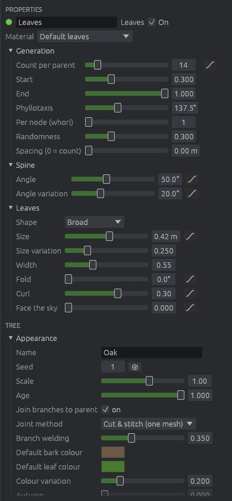
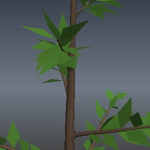
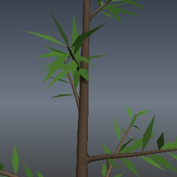
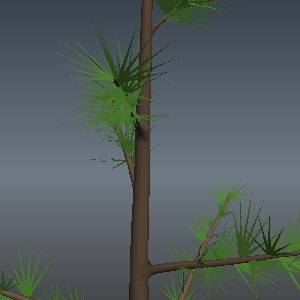
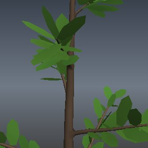
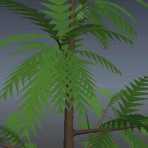
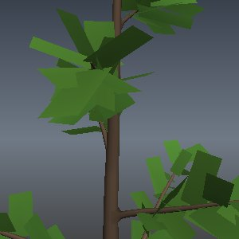
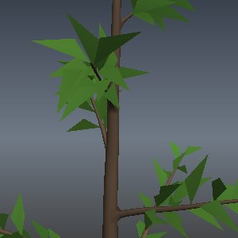
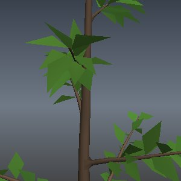
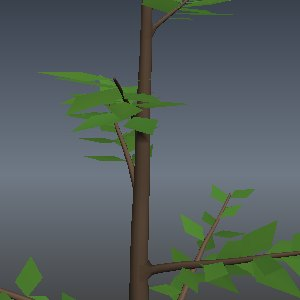

Leaves
A leaves generator places leaves, needles or fronds along the stems of its parent. Placement works like for branches (count, start, end, phyllotaxis, angle); the Leaves section sets their form.

Shape
The Shape menu selects the outline of each leaf:






- Broad, Narrow, Needle and Round are modelled leaf outlines that look right with a plain colour.
- Frond (palm) is a long feathered leaf for palms and ferns.
- Card (for leaf textures) is a plain rectangle. Use it with a leaf texture that has transparency, and turn on Cut-out in the material, so the texture defines the outline. One card can show a whole cluster of leaves.
- Custom mesh (OBJ) uses a model of your own. See below.
Size and form
- Size 0.02 to 6 m
- The length of each leaf from base to tip, in metres. A size curve makes leaves larger or smaller along the parent.
- Size variation 0 to 1
- Random variation of the size.
- Width 0.1 to 1.5
- The width of the leaf relative to its length.
- Fold 0° to 89°
- Folds the two halves of the leaf up along the midrib.
- Curl −1 to 1
- Bends the leaf tip down (positive) or up (negative).
- Face the sky 0 to 1
- Turns the leaves so their upper side faces up. At 0 they keep the orientation of their stem; at 1 they lie flat towards the sky, as many broadleaf trees hold their leaves in the sun.



Custom leaf models
With the shape Custom mesh (OBJ), every leaf is a copy of a model you provide: a leaf cluster, a sprig of needles, a flower or a fruit.
- Model the leaf in any 3D program so that it points along +Y from its base to its tip, with its upper face towards +Z. The base is the point where it attaches to the twig.
- Export it as an OBJ file with texture coordinates. Keep it under 5,000 triangles, because it is repeated for every leaf.
- Choose Custom mesh (OBJ) as the shape, click Choose… next to Model and select the file.
ArborStudio moves the model so that its lowest point is at the base and scales it to a length of 1, so the Size setting gives its length in metres and Width scales it sideways. Models without normals get computed normals. ArborStudio reloads the model when the file changes on disk.
Colour
Leaves without a material use the Default leaf colour of the tree with a random variation per leaf (Colour variation). The Autumn and Fallen leaves settings change colours and thin out the crown for the season. See Tree settings. For textured leaves, assign a material; see Leaf textures.